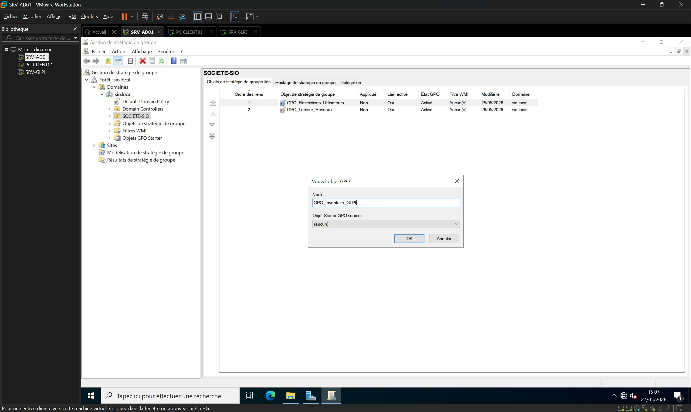
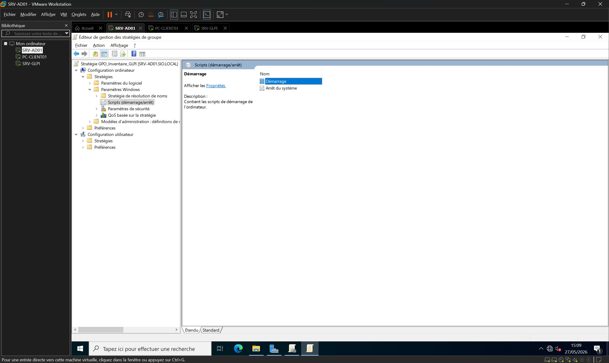
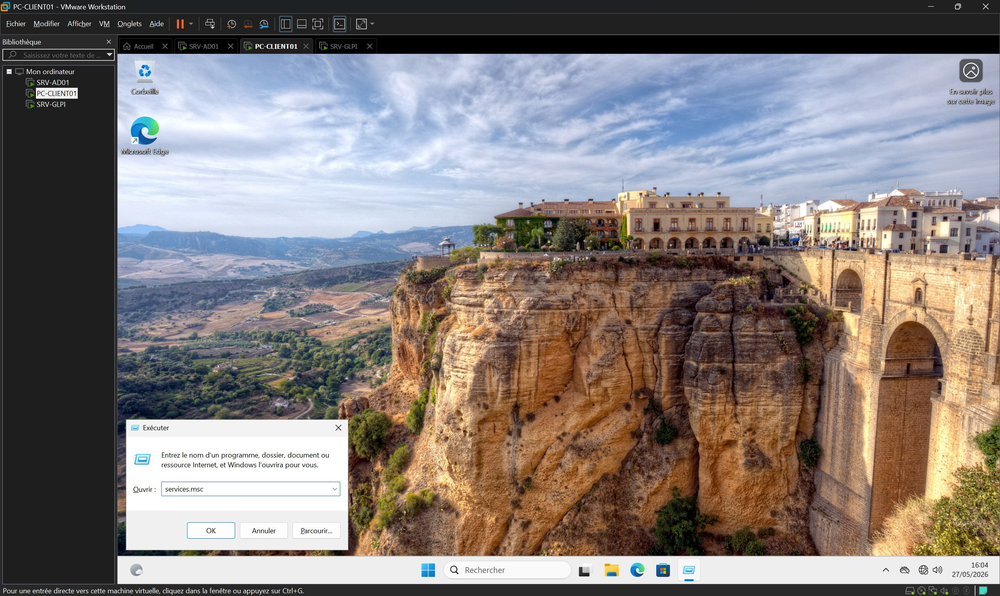
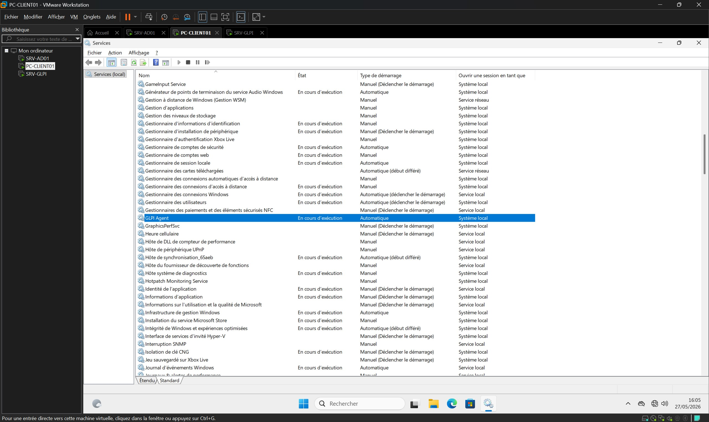

Automatisation de l’inventaire du parc informatique (GLPI / GPO)
Présentation
Dans le cadre de mon alternance au sein du service informatique de l’EBI, j’ai participé à l’étude du remplacement de FusionInventory par GLPI Inventory pour automatiser l’inventaire du parc informatique.
FusionInventory était encore utilisé pour la remontée d’inventaire, mais cette solution n’était plus maintenue. L’objectif était donc de tester une alternative plus récente, directement intégrée à GLPI, afin de fiabiliser la gestion du patrimoine informatique.
Pour éviter tout impact sur la production, j’ai réalisé un Proof of Concept dans un environnement virtualisé isolé. La mission consistait à activer l’inventaire natif GLPI, préparer le déploiement de l’agent et valider la remontée automatique d’un poste Windows.
Objectifs
Configurer et activer GLPI Inventory sur un serveur GLPI de test.
Préparer un point de distribution réseau local pour l’agent GLPI.
Adapter un script de déploiement silencieux en environnement Active Directory.
Créer et lier une GPO de démarrage pour automatiser l’installation de l’agent.
Vérifier la remontée d’inventaire matérielle et logicielle dans GLPI.
Produire une base de procédure exploitable avant une éventuelle mise en production.
Environnement technique
Hyperviseur : VMware Workstation Pro (réseau Host-Only)
Serveur d’inventaire : Debian 13.5.0 (SRV-GLPI)
Contrôleur de domaine : Windows Server 2022 (SRV-AD01)
J’ai préparé l’environnement de test sur VMware Workstation. Le serveur GLPI a été installé sur une machine Debian disposant d’une pile LAMP opérationnelle et d’une adresse IP statique.
J’ai également configuré Apache pour pointer vers le répertoire public de GLPI, conformément aux prérequis de l’éditeur.
Activation de l’inventaire natif
Depuis l’interface d’administration de GLPI, j’ai activé la réception des données d’inventaire et autorisé l’importation automatique des principaux composants : matériels, logiciels, volumes et périphériques.
Préparation du point de distribution réseau
Pour éviter un téléchargement Internet depuis chaque poste, j’ai créé un point de distribution local sur le contrôleur de domaine Windows Server.
Le dossier a été partagé en mode avancé sous le nom Deploiement_GLPI$. Le symbole $ permet de masquer le partage dans l’exploration réseau standard.
J’y ai déposé l’installateur MSI de l’agent GLPI ainsi que le script VBS de déploiement.
Adaptation du script de déploiement VBS
Le script officiel a été adapté afin de correspondre à mon architecture de test et d’utiliser le partage réseau local.
SetupVersion = "1.9" : correspondance avec la version de l’installateur téléchargé.
SetupLocation = "\\SRV-AD01\Deploiement_GLPI$" : installation depuis le point de distribution local.
SetupOptions = "/quiet RUNNOW=1 SERVER='http://192.168.10.20/'" : installation silencieuse, lancement immédiat de l’inventaire et ciblage du serveur GLPI de test.
Création de la stratégie de groupe
J’ai créé une GPO dédiée nommée GPO_Inventaire_GLPI, puis je l’ai liée à l’unité d’organisation contenant le poste client de test.
Dans l’éditeur de stratégie, j’ai ajouté le script au démarrage de l’ordinateur afin qu’il s’exécute automatiquement avant l’ouverture de session.

Ajout du script au démarrage via GPO
Dans la GPO, j’ai utilisé le chemin suivant :
Configuration ordinateur > Stratégies > Paramètres Windows > Scripts (démarrage/arrêt)
Le script de démarrage pointe vers le chemin UNC \\SRV-AD01\Deploiement_GLPI$\glpi-agent-deployment.vbs. Les postes ciblés peuvent ainsi exécuter le déploiement automatiquement au démarrage.

Recette technique côté client
Pour valider le fonctionnement de la GPO, j’ai redémarré le poste Windows 11 de test. Après ouverture de session, j’ai vérifié les services locaux avec services.msc.
L’agent GLPI était installé, configuré en démarrage automatique et en cours d’exécution.


Validation de la remontée d’inventaire
Dans GLPI, le poste PC-CLIENT01 est apparu dans la liste des ordinateurs. La fiche d’inventaire contenait les informations matérielles et logicielles remontées par l’agent.
Résultats obtenus
Point de distribution réseau masqué et fonctionnel sur le contrôleur de domaine.
Script de déploiement adapté pour une installation locale et silencieuse.
GPO de démarrage créée et testée.
Agent GLPI installé automatiquement sur le poste Windows de test.
Remontée d’inventaire validée dans GLPI.
GLPI Inventory identifié comme une alternative pertinente à FusionInventory.
Compétences mobilisées
Gérer le patrimoine informatique
Automatisation de l’inventaire matériel et logiciel afin de maintenir une vision à jour du parc.
Répondre aux incidents et aux demandes d’assistance et d’évolution
Préparation d’une évolution technique visant à remplacer une solution obsolète par un outil maintenu.
Travailler en mode projet
Réalisation d’un POC isolé, validation technique et préparation d’une procédure avant production.
Mettre à disposition des utilisateurs un service informatique
Déploiement transparent de l’agent afin de fiabiliser un service d’inventaire sans intervention utilisateur.
Organiser son développement professionnel
Montée en compétences sur GLPI, l’agent GLPI, les GPO et l’intégration entre Linux et Active Directory.
Bilan personnel
Cette réalisation m’a permis de traiter une problématique concrète de gestion de parc informatique. J’ai compris l’intérêt de valider une solution dans un environnement de test avant toute mise en production.
J’ai également progressé sur l’automatisation par GPO, l’adaptation de scripts et la vérification d’une chaîne complète : serveur GLPI, point de distribution, agent, poste client et remontée d’inventaire.